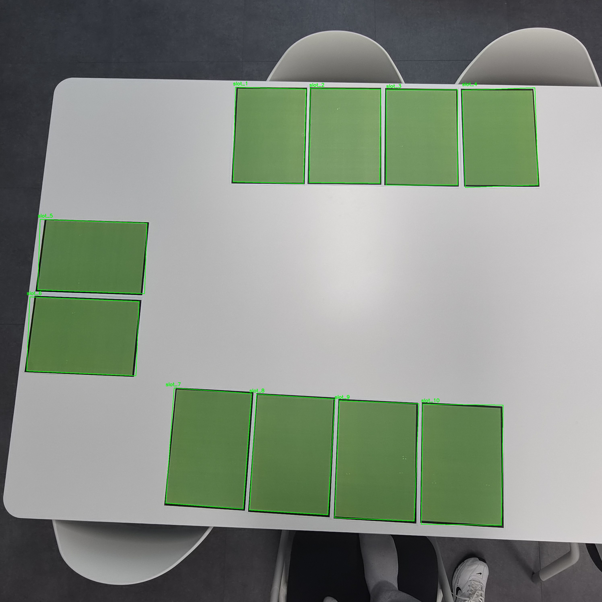

YOLO 기반 스마트 주차 판정 시스템
단일 카메라로 주차면별 점유 상태를 자동 판정하는 비전 시스템
- 배경카메라 한 대로 주차면별 점유 상태를 자동 판정해야 했습니다.
- 문제조명과 각도 변화로 ROI 검출이 흔들리고 중복 영역이 발생했습니다.
- 해결YOLO 학습, ROI 설정, IoU 계산, 중복 제거,
EMPTY / OCCUPIED판정을 구현했습니다. - 성과mAP50 0.948 기준으로 10개 주차면의 상태를 화면에 시각화했습니다.
Python, YOLO, OpenCV, IoU
